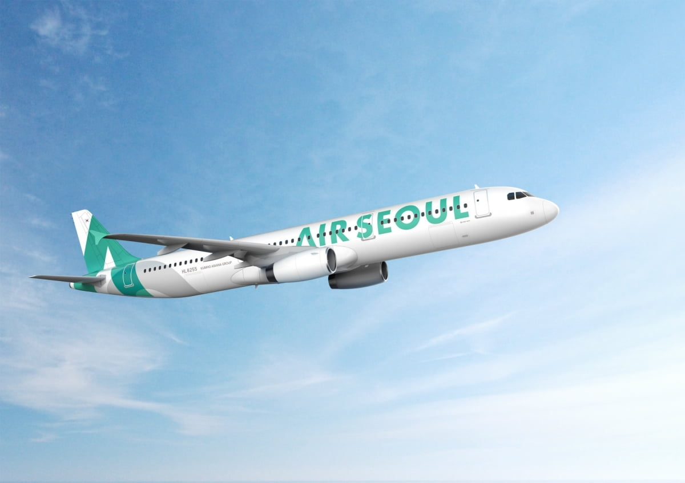

패키지여행 강의 - 현지교통

패키지여행 현지교통 특징 및 팁
공항에서 보라카이 섬까지 이동
- 패키지여행은 일반적으로 가이드가 공항 픽업을 제공
- 칼리보 공항(KLO) → 전용 차량 + 배편 이용 (2~3시간 이동)
- 카티클란 공항(MPH) → 전용 밴 + 배편 (이동 시간 30~40분)
보라카이 섬 내 이동
- 패키지여행 일정에 따라 단체 차량 이동 가능
- 추가적인 이동이 필요할 경우 트라이시클 이용 가능
- 프라이빗 차량 옵션 제공 여부 확인 (추가 비용 발생 가능)
패키지여행 시 교통 이용 팁
- 일정 외 개별 이동이 필요한 경우 추가 비용 확인 필수
- 이동 중 가이드의 안내를 잘 따르는 것이 중요
- 트라이시클 이용 시 요금 사전 협의 필요